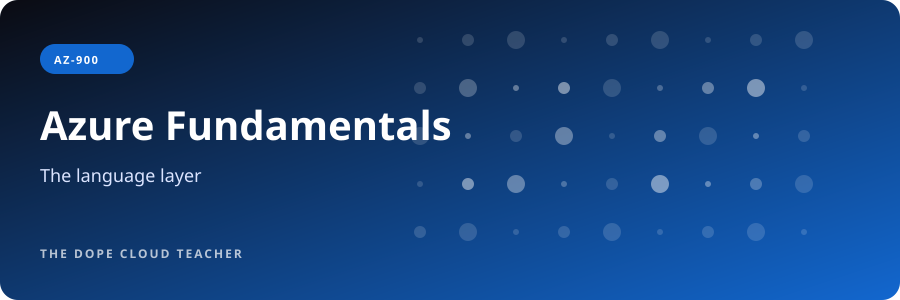
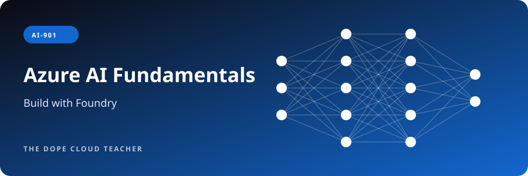
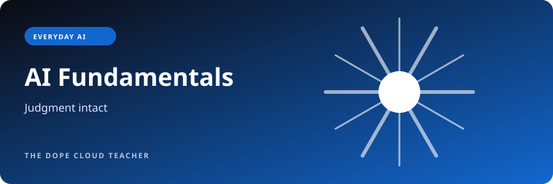
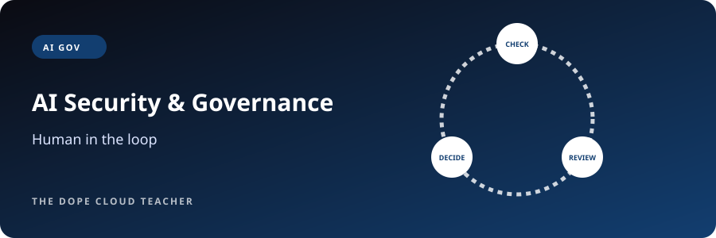

Try the teaching
$0 to explore
Read a course overview, try one lesson and answer a short knowledge check. No purchase needed.
Find your free sample →Explore nine course paths, from stopping scams to designing Azure for a whole agency. Plain language first, the professional terms right after, and real practice every step.
$0 to explore
Read a course overview, try one lesson and answer a short knowledge check. No purchase needed.
Find your free sample →$97 one-time
Cloud 101 is the self-paced starting point: five modules, two builds and practical cloud foundations.
Preview Cloud 101 →$297 course path
Explore AZ-900 or AI-901. Review the format and confirm enrollment details before paying. Microsoft exam fees are separate.
Explore AZ-900 → · Explore AI-901 →Some community workshops are free through partner programs; availability is confirmed by the host. Organizational and advanced cohorts receive a tailored quote. Prices are shown in USD. These are total course prices, not monthly installment offers.
See the syllabus and try one lesson free. Enrolled learners receive the remaining lessons, labs, capstone and full practice bank. Choose your starting point before you spend a dollar.

Your first cloud build starts with understanding.
$97 one-time
Try a free lesson →
The language layer. Learn how Azure is put together, then prove it with Microsoft's entry certification.
$297 course path · Microsoft exam fee separate ($99 US)
Try a free lesson →
The operator layer. Configure, secure and keep Azure running under real-world rules.
$597 course path · Microsoft exam fee separate ($165 US)
Try a free lesson →
The decision layer. Turn business requirements into Azure designs you can defend in a room full of skeptics.
Contact DCT for cohort pricing · Microsoft exam fee separate ($165 US)
Try a free lesson →
Understand AI, then build with it. Prompts, agents, speech, vision and document extraction in Microsoft Foundry.
$297 course path · Microsoft exam fee separate ($99 US)
Try a free lesson →
AI, with your judgment intact. Useful prompts, private info protected, and the habit of checking what AI gets wrong.
Workshop pricing set by host organization · free for some partner programs
Try a free lesson →
Protect accounts, data, systems and communities with the three controls that stop most real-world breaches.
Contact DCT for cohort and agency pricing · Microsoft exam fee separate ($99 US for SC-900)
Try a free lesson →
Use AI with boundaries, oversight, privacy, and the judgment to know when not to automate.
Contact DCT for organizational pricing
Try a free lesson →
Phishing, passwords, passkeys, scams and what to do when something goes wrong. For every age.
Set by host organization · free at many partner sites
Try a free lesson →Nothing matches that yet. Try a broader word like "cloud", "AI" or "security", or press Show everything.
Start on any trail. Each one stacks toward a Microsoft credential and a real job title.
Microsoft retires and replaces exams often. Here's where things stand, checked against Microsoft Learn. Prices are U.S. list prices and vary by country.
| Exam | Status | What to know | Price | Renewal | Source |
|---|---|---|---|---|---|
| AZ-900 Azure Fundamentals | Active | Skills as of July 20, 2026 | $99 | Doesn't expire | Official page |
| AI-901 Azure AI Fundamentals | Active | Skills as of April 15, 2026 · 55–60% hands-on in Microsoft Foundry · expects basic Python | $99 | Doesn't expire | Official page |
| AI-900 Azure AI Fundamentals (old) | Retired June 30, 2026 | Replaced by AI-901. Earned AI-900 certifications remain valid. | — | — | Official page |
| SC-900 Security, Compliance & Identity Fundamentals | Active | Skills updated July 28, 2026 | $99 | Doesn't expire | Official page |
| AZ-104 Azure Administrator Associate | Active | Skills as of April 17, 2026 · identity & governance 20–25%, networking 15–20% | $165 | Free annual renewal | Official page |
| AZ-305 Azure Solutions Architect Expert | Active | Skills as of April 17, 2026 · Expert award requires AZ-104 | $165 | Free annual renewal | Official page |
| AZ-500 Azure Security Engineer (old) | Retired August 31, 2026 | Replaced by SC-500. Existing holders can't renew; they must pass SC-500. | — | — | Official page |
| SC-500 Cloud and AI Security Engineer Associate | Active | Replaces AZ-500 · identity, storage/networking, compute, security posture | $165 | Free annual renewal | Official page |
Also changed in 2026: AI-102 → AI-103 (June 30), AZ-204 → AI-200 (July 31). Always confirm on Microsoft Learn before you book.